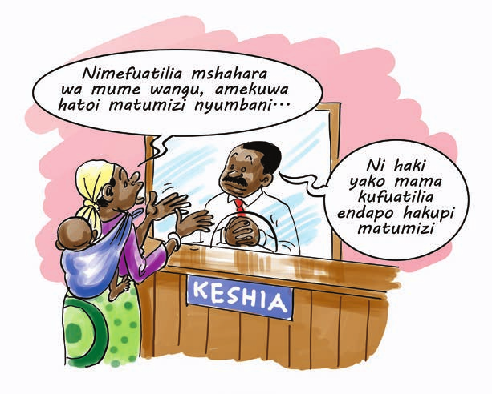
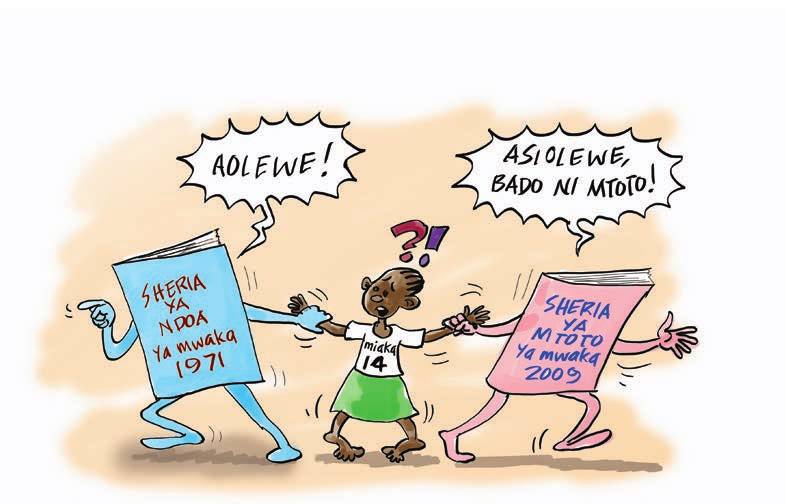

Kujenga uwezo kwa washiriki kufahamu taratibu za ufungishaji ndoa na haki za wanandoa
Baada ya kukamilika mada hii, washiriki watafahamu;
Sehemu ya Kwanza - Ndoa na Mambo Muhimu katika Ndoa
Mwezeshaji wagawe washiriki katika makundi ya watu watano watano wajibu maswali yafuatayo:-
Mwezeshaji toa mchango wako kwa kufafanua sheria ya ndoa ya mwaka 1971 na kuanisha mambo muhimu juu ya ndoa na talaka. Eleza kuwa sheria ya Ndoa ya Mwaka 1971, Sura ya 29 inatoa mwongozo kuhusu haki na wajibu kwa wanandoa, utaratibu kuhusu jukumu la malezi, haki na maslahi ya watoto wa ndoa. n.k. Sheria hii inatambua ndoa za kimila, ndoa za kidini na ndoa za kiserikali zinazofungwa bomani. Sheria imetambua tofauti hizi kwa kuzingatia maslahi na utofauti wa kiutaratibu wa maisha ya wanajamii.
Sheria hii ndiyo inayoshughulikia mahusiano ya wanandoa (mke na mume) nchini Tanzania.
Kwa mujibu wa sheria hii, ndoa ni muungano wa hiari kati ya mwanamke na mwanaume unaokusudiwa kudumu kwa muda wa maisha yao yote.
Kisheria ndoa hutambulika pale ambapo watu wawili kwa hiari yao wataamua kuungana chini ya mamlaka husika. Watu wanaoishi bila ndoa hawatakuwa na haki kama zile za wanandoa, mfano juu ya mali walizochuma. Mtu yoyote kati yao ana uwezo wa kupinga kwa kutoa sababu kwamba hawakuwa kwenye ndoa.
Kuna aina kuu mbili za ndoa:-
Taratibu za kufunga ndoa hizi zaweza kuwa:-
Mwezeshaji fafanua kwa washiriki sifa za kufunga ndoa na haki na wajibu wa wanandoa huku ukitoa mifano hai kama inavyoelezwa hapo chini;
Ndoa lazima iwe ya Hiari Muungano wa ndoa kati ya mwanaume na mwanamke ni lazima uwe wa hiari kwa pande zote mbili. Hivyo basi, hiari iliyopatikana kwa njia ya udanganyifu, ulaghai, kwa kurubuni au kulazimisha, haiwezi kisheria kuhesabika kuwa hiari kwakuwa haikutolewa kwa uhuru. Na hivyo muungano kati ya watu hao wawili hautahesabika kuwa ni wa hiari na unaweza kuifanya ndoa kuwa batili. Mmoja wa wanandoa anaweza kwenda kwenye mamlaka husika na kuomba ndoa ibatilishwe.
Muungano lazima uwe kati ya mwanamke na mwanaume: Sheria za Tanzania inatambua ndoa kama muunganiko wa hiari baina ya mwanamke na mwanaume. Muunganiko wowote tofauti na huo unavunja sheria za nchi
Umri: Umri unaokubalika kisheria ni miaka 18, ila binti anaweza kuolewa akiwa chini ya umri huo lakini si chini ya umri wa miaka 15 kwa idhini ya wazazi/walezi wake; Ikiwa umri wake ni chini ya miaka 14 basi kibali maalumu kitatolewa na mahakama. Wanaharakati wa Haki za binadamu wamekuwa wakikosoa kifungu hiki kwa kuwa kinaleta ubaguzi na kuruhusu binti kuolewa akiwa mtoto hivyo kumvunjia haki zake za mtoto na haki za binadamu
Muungano wa ndoa uwe wenye kutazamiwa kudumu: Sheria ya Ndoa inasema muungano wa mume na mke uwe unakusudiwa kuwa wa kudumu mpaka pale kifo kitakapowatenganisha au endapo, kwa dini ya Kiislamu, kutatolewa talaka. Ndoa za muda mfupi kama vile za mikataba kwa mujibu wa sheria ya ndoa ya Tanzania hazikubaliki.
Wanandoa wasiwe maharimu (ndugu wa damu): Kwa mujibu wa sheria hii, hairuhusiwi baba na binti, mama na mwana, babu na mjukuu, au bibi na mjukuu, kaka na dada, kuoana
Wanandoa ni lazima wawepo wakati ndoa ikifungwa. Wanandoa wote ni lazima wawepo wakati wa tukio la kufunga ndoa. Hata hivyo, sheria inaruhusu ndoa kufungwa katika mazingira ya mwanandoa mwingine kutokuwepo ikiwa kuna sababu za msingi. Hata hivyo, ni lazima mwanandoa huyo awe ametoa idhini hiyo mbele ya mashaidi.
Kuwepo na Mashahidi: Hawa lazima wawe watu wenye akili timamu na wawe na umri wa miaka 18 na kuendelea. Mashahidi wanatakiwa wasiwe chini ya watu wawili
Kusiwe na ndoa inayoendelea: Kwa wakristo hairuhusiwi kufunga
Mfungishaji ndoa lazima awe na mamlaka: Mfungishaji ndoa ni lazima awe na leseni au kibali cha kufungisha ndoa kutoka kwa msajili wa ndoa. Hata hivyo, ndoa iliyofungwa na mtu asiye na leseni kisheria si batili ikiwa haitapingwa na mtu yeyote mahakamani
Mwanamke asiwe katika Eda: kwa mujibu wa sheria za kiislamu, mwanamke wa kiislamu hatakiwi kufunga ndoa awapo kwenye eda ya kufiwa na mume au wakati ameachana na mume wake.Eda ni kipindi cha miezi 3kinachotolewa kwa mwanamke wa kiislamu aliyeachika katika ndoa au aliyefiwa na mumewe, ili taratibu fulani za kidini zifanyike. Kama mwanamke ambaye ndoa ilifungwa Kiislamu anaolewa wakati wa kipindi cha Eda hakijaisha basi ndoa hiyo ni batili. Lakini mfaruku au mtalikiwa awe anafuata dini ya Kiislamu. Kama atabadili dini baada ya kufiwa au kupewa talaka masharti ya Eda hayatambana.
Ndoa itangazwe kwa muda wa siku 21 na kusiwe na pingamizi: Wanaotazamia kufunga ndoa wasiwe wamewekewa pingamizi la msingi na mtu yeyote. Sheria ya ndoa inatamka wazi kwamba kabla ya ndoa kufungwa lazima tangazo litolewe kuonyesha kusudio la kufunga ndoa. Tangazo lazima liwe la siku 21 kabla ndoa husika kufungwa, lakini pia sheria inamruhusu msajili wa ndoa kufungisha ndoa bila tangazo la siku 21 kama kuna sababu za msingi.
Sheria ya ndoa imeainisha haki na wajibu mbalimbali kwa wanandoa kama ifuatavyo:-
Ndoa batili: Ndoa batili ni ndoa ambayo si halali kisheria toka kufungwa kwake. Vitu vinavyofanya ndoa kuwa batili kama vifuatavyo;
Ndoa Batilifu: Ndoa batilifu ni ndoa ambayo itachukuliwa kisheria kuwa ni ndoa halali hadi hapo amri ya kuivunja itakapotolewa na mahakama. Ndoa batilifu ni halali kama ndoa nyingine isipokuwa ina kasoro fulani. Wanandoa katika ndoa hii wana haki na wajibu sawa kama ilivyo katika ndoa nyingine zisizo na kasoro. Kadhalika watoto waliozaliwa katika ndoa ya namna hii ni halali na wana haki zote kisheria.Vitu vinavyofanya ndoa kuwa batilifu ni kama vifuatavyo;
Angalizo: Hata hivyo, ndoa batilifu itaendelea kuwa ndoa halali kisheria mpaka pale mmojawapo atakapoamua kupeleka malalamiko mahakamani na mahakama kuibatilisha baada ya kupata uthibitisho wa sababu yoyote kati ya hizo tajwa hapo juu.
Mwanamke alie katika ndoa ana haki sawa kama zile za mwanaume ikiwa ni pamoja na haki ya;
Angalizo: mwanamke pia ana wajibu wa kumtunza na kumhifadhi mume wake pale ambapo mume wake ni mgonjwa au ameshindwa kufanya shughuli zake kwa sababu ya kuumia au kutokuwa na kazi inayomuingizia kipato.
Sheria imebainisha na kutoa nguvu kwa mamlaka zifuatazo kuwa na uwezo wa kufungisha ndoa. Watu ambao wanahitaji kufunga ndoa wanaweza kwenda kwenye mamlaka zifuatazo:
Mwezeshaji wagawe washiriki katika makundi na wafanye yafuatayo;
Mwezeshaji funga mjadala kwa kutia msisitizo kuwa kwa mujibu wa sheria, mahari siyo kigezo cha kufungisha ndoa. Jambo la msingi ni kwamba wanaokusudia kufunga ndoa wawe wametimiza sifa za kufunga ndoa mfano umri, hiari n.k
Nini dhana ya Ndoa: Mwezeshaji wasomee washiriki kisa mkasa kifuatacho;
Juma na Mage ni vijana wanaoishi pamoja katika nyumba moja baada ya kumaliza masomo ya chuo kikuu. Watu hawa wanaishi kwa kipindi cha zaidi ya miaka sita sasa ingawa bado hawajaoana. Hata hivyo wote wanafurahia kuishi pamoja kama mke na mume ingawa bado hawajaamua kuzaa watoto. Kwa kipindi cha maisha yao walioishi pamoja wamefanikiwa kujenga nyumba Tegeta, kununua gari na fenicha za ndani. Juma na Mage pia wanaishi na mtoto wa dada yake na Juma aitwae Neema. Hatimae Neema amepata mchumba aitwae Baraka. Wazazi wa Neema wapo mbali na kijiji na wametoa ruhusa kwa Mage na Juma kupokea barua ya uchumba wa Neema kwa niaba yao. Siku ya siku ilipofika, kuna baadhi ya dada wa Juma walitaka Mage asiwepo kwenye kupokea mahari eti kwa sababu sio mke halali wa Juma. Pia wakamtaka Juma amfukuze mwanamke huyo kwani pamoja na kwamba hajamuoa pia inaonekana kuwa hazai. Wakamshauri Juma kuoa mwanamke mwingine. Hatimae, Juma akaamua kumfukuza Mage nyumbani kwao bila ya kumpatia kitu chochote sababu hawakuwa wameoana na pia vitu vyote viko kwenye jina la Juma. Mage amefungua madai mahakamani anadai kuwa yeye alikuwa mke halali wa Juma na hivyo anadai kupewa talaka na pia kugawiwa mali waliyochuma pamoja baada ya kuachana.
Maswali kwa washiriki
Baada ya washiriki kujadili kisa hiki, mwezeshaji elezea dhana ya ndoa na mambo muhimu yanayojenga dhana hiyo kwa kufafanua kama ifuatavyo;
Sheria ya Ndoa ya mwaka 1971 inatambua kuwepo kwa dhana ya ndoa kwa mujibu wa kifungu cha 160. Kwa mujibu wa kifungu hiki, sheria ya ndoa inaeleza kwamba watu wawili (mke na mume) ni wanandoa ingawa hawajafuata taratibu zozote za kufunga ndoa iwe kimila, kidini au kiserikali.
Na ili mke/Mume aweze kuithibitishia mahakama kuwa alikuwa anaishi kwenye dhana ya ndoa, mambo yafuatayo ni muhimu.
Angalizo: Dhana ya ndoa inaweza kukanushika mahakamani ikiwa mmoja wa wenzi hao atatoa ushahidi wa kuonyesha kuwa hawakuishi kama mke na mume au muda wa miaka miwili haukutimia.
Dhana hii ya ndoa husimama pale tu ambapo hakuna mmoja kati ya wenzi hao wawili aliyekuwa na ndoa inayoendelea wakati akiingia katika mahusiano hayo. Kwa hiyo, kimada au ‘nyumba ndogo’ ya mtu mwenye ndoa hawezi kudai haki ya ‘dhana ya ndoa’.
Sheria ya ndoa inamtaka kila mwanandoa kusajili ndoa yake katika mamlaka husika ndani ya siku 30 baada tu ya kufunga ndoa. Ndoa za aina zote zinatakiwa kusajiliwa kwenye mamlaka husika na kutolewa cheti cha ndoa.
Ndoa ambazo zimefungwa muda mrefu pia zinaweza kusajiliwa kama haikusajiliwa kabla.
Faida za Kusajili Ndoa
Mwezeshaji jadili pamoja na washiriki maswali yafuatayo:-
Mwezeshaji toa ufafanuzi wa talaka ni nini na mambo muhimu katika kushughulikia masuala ya talaka kwa kutumia ujuzi wako na msaada wa mwongozo huu kama inavyoelezwa hapo chini.
Kwa mujibu wa dini ya kiislamu ndoa inaweza kuvunjwa kwa njia ya talaka. Hata hivyo kwa mujibu wa Sheria ya Ndoa, ndoa itahesabika kuwa imevunjika ikiwa imevunjwa na mahakama pekee
Kwa maana hiyo, talaka inaweza pia kutafsiriwa kuwa ni ruhusa ya kisheria ambayo mahakama hutoa kwa mume au mke kumwacha wanandoa mwenzake
Mahakama hutoa talaka inapoona na kuridhika kuwa ndoa imevunjika kiasi ambacho haiwezi kurekebishika tena. Ili kuthibitisha kuwa ndoa imevunjika na haiwezi kurekebishika tena, mahakama hutumia vigezo vikuu vifuatavyo:-
Kwa utaratibu wa kisheria, mwanandoa anayetaka kupata amri ya mahakama ya kuvunja ndoa yake anapaswa afanye yafuatayo;-
Angalizo: ndoa yoyote haiwezi kuvunjwa hadi iwe imefikisha muda wa miaka miwili, labda kuwe na sababu nzito ambayo inaweza kuishawishi mahakama kutoa hati ya talaka kabla ya ndoa kutimiza miaka miwili.
Kwa kawaida mzazi yoyote anaweza kuomba apewe amri ya kukaa na mtoto baada ya ndoa kuvunjika. Mahakama ndio yenye mamlaka ya kuamua mtoto ataishi na nani pindi ndoa inapovunjwa na baada ya ndoa kuvunjika. Amri ya kubeba dhamana ya malezi ya mtoto/ watoto inaweza kutolewa kwa baba, mama au ndugu wa karibu wa mtoto/watoto.
Haitajalisha mtoto/watoto watakaa na nani, mume na mke watatakiwa kuchangia kutoa matunzo kwa ajili ya watoto, na kuhakikisha haki zao za msingi kama elimu, chakula, mavazi, kutibiwa, hazipotei.
Sehemu ya Pili - Ndoa za Utotoni/Ndoa Katika Umri Mdogo
Mtoto ni mtu yeyote mwenye umri chini ya miaka 18. Hivyo basi ndoa za utotoni ni kitendo cha kuishi maisha ya mke na mume na mtu mwenye umri chini ya miaka 18. Ufungishaji wa ndoa kwa watu walio chini ya umri wa miaka 18 ni ukiukaji wa haki za mtoto.
Tanzania ni miongoni mwa nchi zinazoongoza kwa ndoa za utotoni duniani. Tafiti mbalimbali zinaonesha kuwa mnamo mwaka 2010,asilimia 37 ya wanawake wenye umri wa miaka 20 hadi 24 walioolewa kabla ya kufikisha miaka 18. Maana yake ni kwamba wasichana wawili (2) kati ya watano (5) nchini Tanzania waliolewa wakiwa watoto.
Kwa mujibu wa Chama cha Wanahabari Wanawake Tanzania (TAMWA) ndoa za umri mdogo zinaonekana ni jambo la kawaida nchini Tanzania. Mikoa inayoongoza kwa ndoa za utotoni ni Shinyanga (asilimia 59), Tabora (asilimia 58), Mara (asilimia 55), Dodoma (asilimia 51), Lindi (asilimia 48), Mbeya (asilimia 45), Morogoro (asilimia 42), Rukwa (asilimia 40), Ruvuma (asilimia 39), Mwanza (asilimia 37), Kagera (asilimia 36), Mtwara (asilimia 35), Manyara (asilimia 34), Pwani (asilimia 33), Tanga (asilimia 29), Arusha (asilimia 27), Kilimanjaro (asilimia 27), Kigoma (asilimia 26), Dar es Salaam (asilimia 19), na Iringa (asilimia 8).
Kikwazo kikubwa katika kupambana na tatizo la ndoa za utotoni ni sheria ya ndoa ya mwaka 1971. Sheria hii inaruhusu wasichana wenye miaka 14 kuolewa (kwa ruhusa maalum ya wazazi), inaruhusu wasichana wenye umri kuanzia miaka 15 kuolewa iwapo umbile lao linaonekana kubwa.
Sheria ya ndoa hubagua kati ya wasichana na wavulana, ikitambua umri wa miaka 15 kama umri wa kisheria wa mwanamke kuweza kuolewa na umri wa miaka 18 kwa mwanaume kuweza kuoa. Sheria hiyo inaashiria kukubalika kwa dhana kwamba miaka michache baada ya kupevuka, wasichana huwa tayari kufanya ngono na kupata watoto, haya pia ndiyo mapokeo katika tamaduni nyingi hapa nchini
Mgongano wa sheria hapa nchini kwa kiwango kikubwa pia unachangia kushamiri kwa ndoa za utotoni. Sheria ya mtoto ya mwaka 2009 haitaji moja kwa moja umri wa kuolewa, hata hivyo inafafanua kuwa mtoto ni mtu yeyote wa umri wa chini ya miaka 18. Kwa hali hiyo basi, sheria ya ndoa ya mwaka 1971 inaridhia moja kwa moja ndoa za utotoni. Pia sheria ya kanuni za adhabu inawabagua wasichana kwa kuruhusu ndoa za umri mdogo mradi tu mke na mume hawatafanya tendo la ndoa hadi wafikishe umri wa miaka kumi na tano au zaidi na wawe hawajatengana. Kumpa majukumu ya ndoa mtoto wa kike kabla ya kufikisha umri wa miaka 18 ni kumbagua na kumnyima fursa sawa za elimu, ukuaji na afya ya akili, afya ya uzazi, na kufurahia utoto wake sawa na mwenzie wa jinsi ya kiume.
Kumaliza mgogoro wa ukatili wa kijinsia
Wakati mwingine wazazi huamini kwamba ndoa hizi zinawalinda wasichana hasa pale wanapoona kwa kufanya hivyo huenda wanawaepusha wasichana na ukatili wa kimwili au kingono. Hata hivyo dhana hii si ya kweli hata kidogo kwani tafiti zinaonesha kuwa wasichana walioolewa kwenye umri mdogo wamekuwa wakipata mateso makubwa kwenye ndoa zao ikiwemo kupata mimba za utotoni ambazo wakati mwingine husababisha vifo na maradhi ya kudumu
Kwa baadhi ya familia masikini sana mahari inayolipwa, kama chanzo cha mapato kwenye familia na wazazi huamini kuwa kwa kumuozesha binti katika umri mdogo kunapunguza mzigo na gharama kwa familia kwani baba anakuwa amepunguza idadi ya watu wa kuwalisha, kusomesha na kutunza
Ndoa za utotoni kwenye Mila na desturi za makabila mengi ya Tanzania zinatokea kwa sababu tu ni utamaduni. Kwa sababu eti imekuwa hivyo katika jamii zetu vizazi kwa vizazi basi tuendeleze ndoa za utotoni. Ikumbukwe kuwa tamaduni, mila na desturi zililetwa na watu/binadamu na zinaweza kubadilika. Huko nyuma mababu na mabibi hawakufahamu madhara ya ndoa za utotoni na mazingira ya ulimwengu yamebadilika sana. Kizazi hiki cha sasa kina wajibu wa kuachana na utamaduni huu unaombagua mtoto wa kike.
Kwenye jamii nyingi nchini ambako ndoa za utotoni zimeshamiri watoto wa kike wanabaguliwa na kutothaminiwa sawa na wenzao wa jinsi ya kiume. Mara nyingi huonekana kama mzigo kwa familia kutunza na kusomesha. Jitihada zifanyike kubadili mitazamo na kusisitiza kuwa watoto wa kike ambao hawaozwi wakiwa na umri mdogo na wamemaliza masomo yao bila kukatishwa kwa sababu yeyote ile wana nafasi kubwa ya kutoa mchango kwenye maendeleo ya familia na jamii.
Wasichana wanaoolewa katika umri mdogo wako katika hatari kubwa ya kupoteza maisha kutokana na kupata mimba katika umri mdogo. Tafiti zinaonesha kuwa wengi ya wajawazito wanaopoteza maisha wakati wa kujifungua ni wale walio na umri chini ya miaka 18. Aidha, watoto wachanga wanaozaliwa na mama mwenye umri mdogo wanakabiliwa na hatari kubwa zaidi ya kupoteza maisha kuliko wale waliozaliwa na mama wa umri mkubwa. Wataalamu wanasema miongoni mwa kila vichanga 1,000 vinavyozaliwa na mama wa umri wa chini ya miaka 18, vichanga 41 hupoteza maisha ndani ya mwezi mmoja baada ya kuzaliwa. Hata hivyo mama anapokuwa na umri wa miaka 20 hadi 29, idadi ya vifo vya vichanga hupungua hadi kufikia vifo 22 kwa kila vichanga 1,000 vilivyozaliwa hai. Pia kutokana na kupata mimba wakiwa watoto mno katika ndoa zao mara nyingi wasichana hukatiza masomo yao na kukosa haki ya kupata elimu, uhuru wa kiuchumi, na hukabiliwa na unyanyasaji wa majumbani kwa sababu ya hali yao ya ujauzito ikiwemo ubakaji wa kwenye ndoa.
Hatari kadhaa za kiafya pia huwakabili wasichana wanaoolewa katika umri mdogo ikiwemo kupasuka mirija ya uzazi, mimba kutunga nje ya mfuko wa uzazi, kupata fistula (Kwa kitaalamu fistula hujulikana kama njia isiyo ya kawaida inayounganisha mfuko wa mkojo na uke, ambayo huruhusu mkojo na/au haja kubwa kutoka kwenye kuta za uke bila mwanamke kuwa na uwezo wa kujizuia. Fistula hutokea baada ya mwanamke kupata madhara wakati wa kujifungua pale ambapo kichwa cha mtoto ni kikubwa kuliko njia ya uzazi. Mimba katika umri mdogo hasa kutokana na ndoa za utotoni ni chanzo kikubwa cha tatizo la Fistula. Pia ndoa za utotoni zinaongeza athari ya maambukizo ya VVU na UKIMWI kwa wasichana kwani mara nyingi hawana sauti kwenye ndoa kuweza kufanya maamuzi ya kutumia kinga wakati wa tendo la ndoa.
Haki ya Elimu ni haki ya kikatiba nchini Tanzania. Ibara ya sita (6) ya katiba inaeleza kuwa “Kila mtu nayo haki ya kujielimisha na kila raia atakuwa huru kutafuta elimu katika fani anayoipenda hadi kufikia upeo wowote kulingana na stahili na uwezo wake.” Hata hivyo watoto wa kike wamekuwa wakikatizwa masomo yao au kutopelekwa shuleni kabisa (na wazazi au walezi wao) ili kuwaoza. Tafiti zinaonesha kuwa uwiano wa watoto wa kike na kiume hupungua kadri wanavyoendelea na masomo ingawa wakati wa uandikishaji uwiano huwa sawa. Kupungua kwa uwiano mara nyingi husababishwa na wasichana kukatizwa masomo kwa ajili ya kuolewa au kupata mimba. Huu ni uvunjaji wa haki za binadamu, kuvunja katiba ya nchi na kukiuka sheria za nchi zinazotoa haki sawa ya elimu kwa watoto wa kike na wa kiume bila kujali jinsi zao au hali zao za kiafya, kiuchumi, kitamaduni na kisiasa. Ikumbukwe kuwa wahenga walinena “Elimu ni Ufunguo wa Maisha”. Katika mfumo wa maisha ya mwanadamu elimu imekuwa nyenzo muhimu ya kumpa mwanadamu maarifa, ujuzi na stadi za kukabiliana na changamoto zinazomkabili binadamu katika mazingira anayoishi. Mtoto wa kike pia anahitaji nyenzo hii imsaidie kukabiliana na changamoto za maisha.
Kwa kuwa mara nyingi hukatizwa masomo hivyo kushindwa kuhitimu elimu yao wasichana wanaoolewa katika umri mdogo, mara hivyo hukosa uwezo wa kuchangia katika pato la kaya. Matatizo ya kiuchumi huwasababishia wasichana walio kwenye ndoa katika umri mdogo usumbufu mkubwa kwenye ndoa zao kwa kuwa tegemezi kupita kiasi kwa waume zao jambo ambalo huwaweka katika hatari zaidi ya kufanyiwa vitendo vya unyonyaji na ukatili.
Wasichana kwenye ndoa za umri mdogo wako katika hatari ya kufanyiwa vitendo vya ukatili wa kijinsia kuliko kundi lolote lile kwa kuwa kwa umri wao mara nyingi hawawezi kujitetea dhidi ya vitendo vya ukatili mfano kupigwa au kulazimishwa ngono, mara nyingi hawana ufahamu wa haki zao na ni tegemezi kiuchumi.
Ndoa katika umri mdogo zinaongeza ubaguzi dhidi ya wasichana kwani sheria inaruhusu ndoa kwa wasichana wenye umri wa miaka15 kuolewa kukiwa na idhini ya wazazi na miaka 14 kwa idhini ya mahakama. Hata hivyo hakuna mahala popote pale sheria inataja mtoto wa kiume kupata idhini ya wazazi au mahakama pale anapotaka kuoa. Huu ni ubaguzi dhidi ya watoto wa kike na ni kuwanyanga’anya uhuru wa kufurahi haki zao utotoni kama ilivyoanishwa kwenye sheria ya mtoto ya mwaka 2009, ni uvunjaji wa katiba ya nchi inayotoa haki sawa kwa wanawake na wanaume na ukiukaji mkubwa wa haki za binadamu na haki za wanawake
Mwezeshaji eleza kuwa ndoa za utotoni ni tatizo kubwa na itagharimu muda na fedha nyingi kulimaliza. Lakini jamii inaweza kutumia baadhi ya mikakati ifuatayo kupunguza tatizo hili. Mikakati hiyo ni:
Angalizo: Ni muhimu pia kuwekeza kwa wasichana na wanawake ili wapate fursa za elimu na uwezo wa kujitegemea kiuchumi